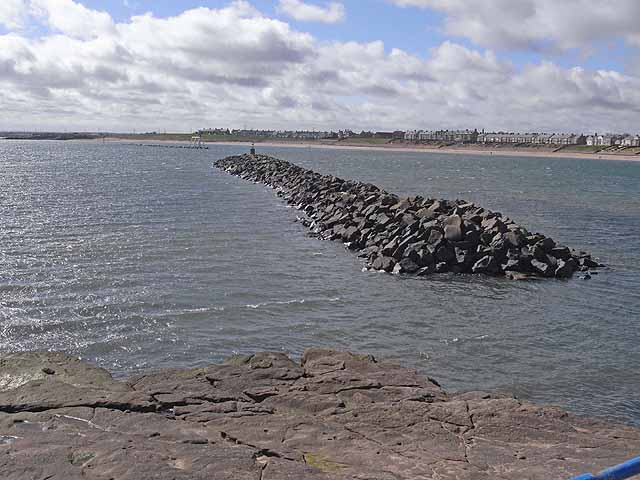
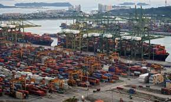
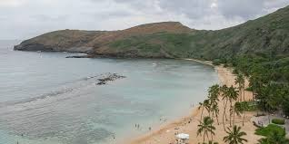

Coastal Research Unit (IMARES)
What is the Coastal Reseach Unit (IMARES)?
We are a research team studying coastal engineering, measuring variables such as waves and currents, and advancing the knowledge in coastal processes through hgih quality science.
We are part of the University of Costa Rica, and we focus on studying coastal processes that affect port infrastructure, beaches, marine ecology, and more.
What are our main research areas?
Our main research areas are as follows:
- Coastal structures
 - Ports and navigation
 - Beach dynamics
